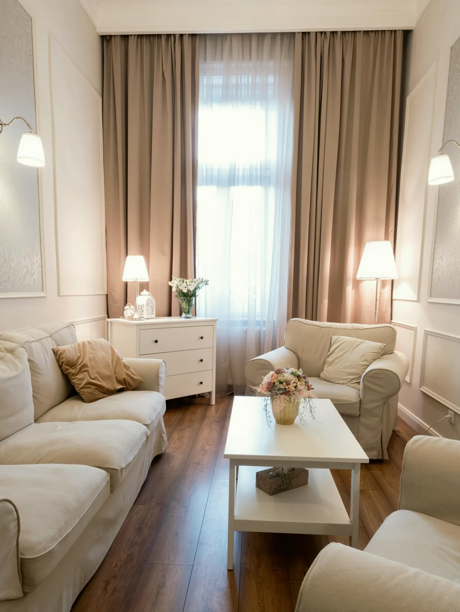
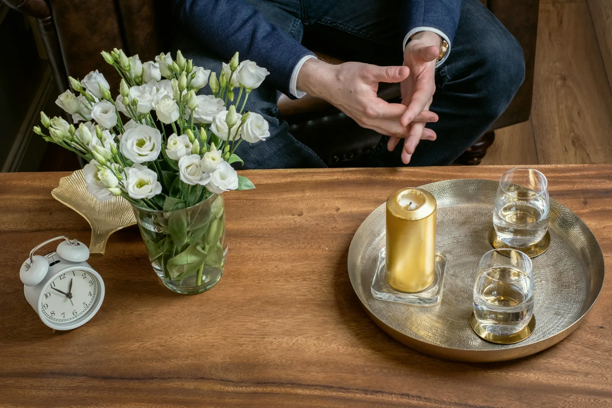
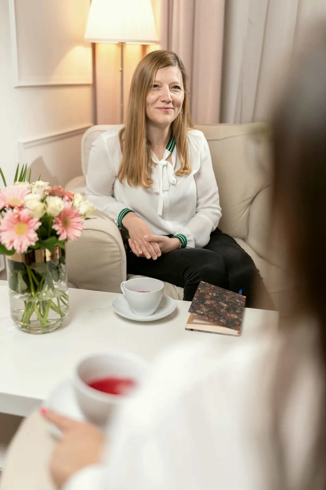

A Központ · Mészáros utca 18.
Rendelő és szakképzőhely
egy budai polgári házban
Nyolc szoba az első és a második emeleten, negyvennégy szakember egy szakmai vezetés alatt, és 2020 óta állami akkreditált szakképzőhely.
Rendelés hétköznap 8-20, az utolsó időpont 19:00. Ügyfélszolgálat hétköznap 9-15.
Évszám, tény és kiállító. Az oldal többi része arról szól, mit jelent ez a mindennapi rendelésben.
Történet
Amit évszámhoz tudunk kötni
A szakmai vezető
Kasza Zsuzsanna
Szakpszichoterapeuta, klinikai szakpszichológus, integratív hipnoterapeuta, pszichodráma-vezető. A Központ szakmai vezetője 2015 óta.
„Mindnyájunk életében van, hogy elakadunk, zűrzavar, szenvedés uralkodik körülöttünk, amikor úgy érezzük, hogy az ég szürke. Higgye el, ez nem jelenti azt, hogy a nap örökre eltűnt.”
Pszichodráma-csoportokat 2007 óta vezet, magánrendelésben 2007 óta dolgozik. Pszichoterapeuta szakvizsgáját a Pécsi Tudományegyetemen tette 2021-ben.
Teljes profilÉrtékek
Öt dolog, amit minden szobában egyformán tartunk
Nem küldetésnyilatkozat. Az, ami a rendelés mindennapjaiban ellenőrizhető.
Egy szakmai mérce
Negyvennégy szakember dolgozik a házban, egy szakmai vezetés alatt. A párosításnál téma, korosztály, időpont és díjsáv szerint javaslunk kollégát a regiszterből.
Szupervízió a képzésben lévők mögött
Akkreditált szakképzőhelyként a képzésben lévő kollégák munkáját kiképző szupervízió kíséri, belső és külső szupervízorokkal. Ön ezt nem látja az ülésen, de a keretet ez tartja.
Váltás házon belül
Ha nem alakul ki a bizalom, nem kell új rendelőt keresnie. Elég jelezni az ügyfélszolgálatnak, és a regiszterből mást javaslunk. Ezt nem kell megmagyarázni.
Keret, ami kimondva van
Ötven perc egy alkalom, a díj a képzettség szerinti sávban, előre ismerten. Az első egy-három alkalom után Ön és a szakember közösen döntenek a folytatásról.
Tanítás és gyakorlat egy házban
A jövő klinikusai és pszichoterapeutái itt tanulják a szakmát, az ELTE hallgatói itt gyakorolnak. Aki tanít, annak a saját munkája is mérce alatt áll.

A ház
Mészáros utca 18., első és második emelet
Két emeleten rendelünk: az első emelet 15. és a második emelet 18. alatt. A szobák berendezése lakásé, nem rendelőintézeté: kanapé, fotelek, lámpafény. Az épületben nincs lift. A bejárati kódot az időpont visszaigazolásában küldjük.
Megközelítés és kapcsolat
Partnereink
Két egyetem, két szerep
Az egyik a szakképzőhelyi akkreditációk kiállítója, a másik a gyakorlat küldője. Részletek az Akkreditáció és képzés oldalon.
Akkreditáció és képzésPécsi Tudományegyetem
A két állami szakképzőhelyi akkreditáció kiállítója: felnőtt klinikai és mentálhigiéniai szakpszichológus szakképzőhely 2020, pszichoterapeuta szakképzőhely 2022.
ELTE PPK
Együttműködés 2022 óta: az ELTE Pszichológiai Intézetének mesterszakos hallgatói a Központban töltik klinikai gyakorlatukat.
Ügyfélszolgálat hétköznap 9-15
Kérdése van a Központról? Egy kolléga válaszol, hétköznap 9 és 15 óra között
Vajas Zsuzsanna, pszichológus asszisztens fogadja a hívásokat és a leveleket. Ha nem tud dönteni, kihez kérjen időpontot, ő segít választani.